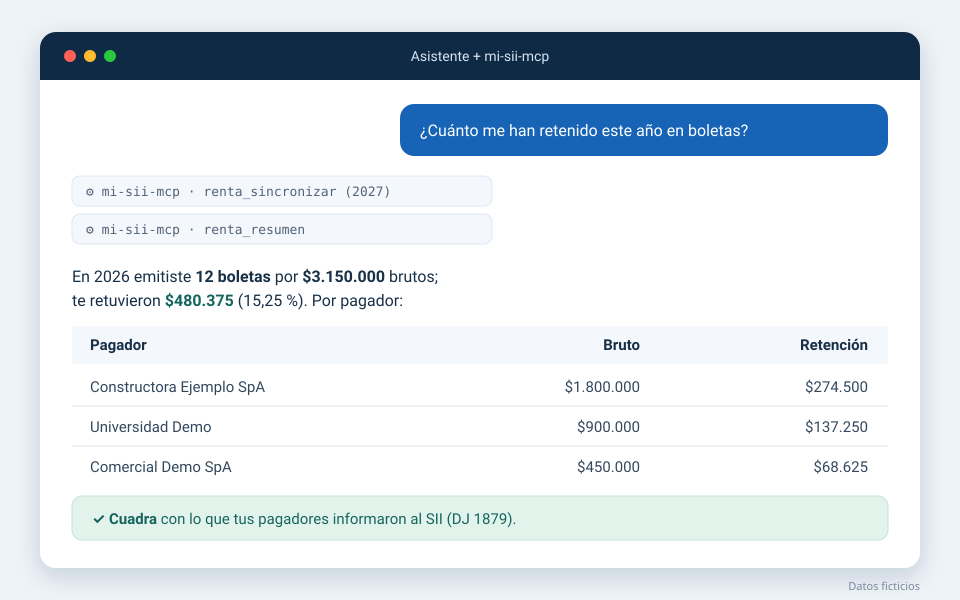
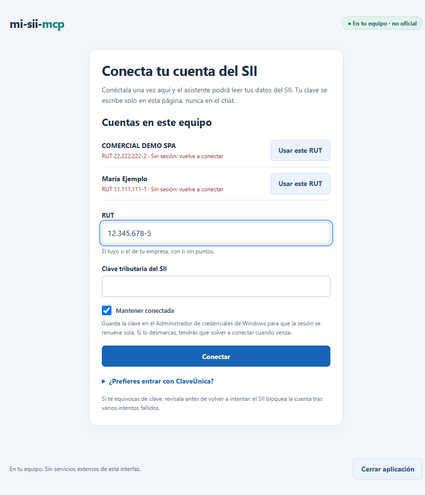

IVA y F29
Registro de Compras y Ventas (RCV), F29 presentados con su PDF y propuesta de F29. Concilia el IVA del RCV con el F29 y detecta F29 faltantes y facturas por reclamar.
Conecta Claude, Codex, Gemini, Grok o Cursor con tu IVA, tus F29, tu renta F22 y tus boletas de honorarios. mi-sii-mcp lee tu información del SII, la guarda en tu equipo y la concilia para mostrarte qué cuadra, qué no y qué vence.

MCP (Model Context Protocol) es un estándar abierto para que los asistentes de inteligencia artificial usen herramientas externas. mi-sii-mcp es un servidor MCP que le entrega a tu asistente herramientas para leer tu información tributaria del Servicio de Impuestos Internos y aplicar reglas de conciliación. En vez de copiar y pegar datos del portal, le preguntas a tu asistente en lenguaje natural.
Una sola vez, en una página local. Tu clave se escribe ahí, nunca en el chat.
Pide los datos al servidor MCP, que los lee del SII en solo lectura y los guarda en tu equipo.
Cruza registros con reglas tributarias y responde con hallazgos claros: qué cuadra y qué revisar.
Lo que mi-sii-mcp lee del SII, cómo lo concilia y lo que hace con tus datos en tu equipo. Frente al SII, todo en solo lectura: nunca presenta, modifica ni emite nada.
Registro de Compras y Ventas (RCV), F29 presentados con su PDF y propuesta de F29. Concilia el IVA del RCV con el F29 y detecta F29 faltantes y facturas por reclamar.
Calcula el vencimiento del F29 según tu caso (día 12, 20 o 28) a partir de tu perfil tributario.
Declaraciones por año tributario, folio vigente, códigos, observaciones y eventos como devoluciones y giros.
Recibidas y emitidas, con detalle boleta por boleta. Cruza la retención con el F29 (código 151) y con la renta (códigos 547 y 492).
Declaraciones juradas que otros presentan sobre ti, cruzadas con tus boletas y tu F22. Avisa si el SII observó la declaración de un informante.
Consultas SQL de solo lectura sobre tus datos guardados y fuentes oficiales para los valores públicos (UTM, tablas, tasas).
Calcula el F29 del mes y el F22 de una persona antes de declararlos, con la fuente de cada número, y los compara con lo presentado.
Importa cartolas en CSV de cualquier banco y las concilia con facturas, boletas e impuestos. Arma libros, asientos y el resultado, exportables a Excel.
Revisa tus cuentas cada día y avisa solo lo nuevo: F29 por vencer, descuadres y anotaciones vigentes de Mi SII. Con una vista de toda tu cartera.
Nota cuando el SII cambia sus respuestas, se adapta solo si puede comprobarlo con los totales del SII y, si no, se detiene antes de guardar datos malos. Reintenta lo que falló y respalda tu base cada día.
Oportunidades que tus datos sostienen, cada una con su norma y la página oficial; simula el régimen Pro Pyme y proyecta el cierre del año. Nunca operaciones sin sustancia.
mi-sii-mcp es un servidor MCP local (stdio): funciona con los clientes que ejecutan servidores MCP locales. El desarrollo y las pruebas en vivo se hicieron con Claude Code; Codex instaló el plugin y Gemini CLI la extensión, y ambos se conectaron al servidor en Windows; para los demás se documenta su formato de configuración estándar.
| Cliente | Estado | Configuración |
|---|---|---|
| Claude Code | Probado | Plugin (/plugin install) o claude mcp add |
| Codex (OpenAI) | Conexión probada | Plugin (codex plugin add) o ~/.codex/config.toml |
| Gemini CLI | Conexión probada | Extensión (gemini extensions install) |
| Grok Build (xAI) | Documentado | grok mcp add o lo que ya instalaste en Claude Code |
| Claude Desktop | Documentado | claude_desktop_config.json |
| Cursor | Documentado | Botón de instalación o ~/.cursor/mcp.json |
| VS Code con GitHub Copilot | Documentado | Botón de instalación o .vscode/mcp.json |
| Windsurf, Cline y otros | Documentado | Formato mcpServers |
Tu información tributaria no pasa por servidores de terceros: mi-sii-mcp corre en tu equipo y habla directamente con el SII.
~/.mi-sii-mcp.mi-sii-mcp (repositorio oficial: github.com/Taksuma-0/mi-sii-mcp) sirve para consultar y conciliar tu información tributaria. Para no confundirlo con otros proyectos de nombre parecido:
Preguntas reales que tu asistente puede responder con mi-sii-mcp.
¿Cuánto me han retenido este año en boletas de honorarios?
Suma la retención de tus boletas emitidas por mes y por pagador.
¿Cuadran mis boletas con lo que declaré en la renta?
Compara tus boletas con los códigos 547 y 492 del F22, considerando el reajuste por IPC.
¿Tengo algún F29 sin presentar o por vencer?
Revisa tus F29 y calcula cada vencimiento según tu caso.
¿Cuadra el IVA de compras y ventas con el F29 de septiembre?
Concilia el Registro de Compras y Ventas con el F29 del mes.
¿Qué informaron mis pagadores al SII sobre mí?
Lee las declaraciones juradas de terceros y las cruza con tus registros.
¿A quién le emití más boletas en 2026?
Consulta el detalle boleta por boleta guardado en tu equipo.
¿Cuánto voy a pagar en el F29 de este mes?
Calcula débito, crédito, remanente, PPM y retenciones antes de declarar.
Concilia mi cartola y dime qué me falta cobrar.
Empareja cada movimiento con tus facturas y lista lo pendiente por antigüedad.
¿Tengo anotaciones en el SII?
Lee tus anotaciones vigentes y el estado de cumplimiento en Mi SII.
¿Cómo puedo pagar menos impuestos, legalmente?
Muestra oportunidades con su norma y simula el régimen Pro Pyme.
Requiere Node.js 22.12 o superior, un cliente MCP y tu clave tributaria del SII. Con npx no descargas ni compilas nada: tu asistente usa la versión publicada en npm.
Como plugin, que trae el servidor y la skill (dentro de Claude Code):
/plugin install mi-sii-mcp --marketplace Taksuma-0/mi-sii-mcpO solo el servidor, desde la terminal:
claude mcp add --scope user mi-sii-mcp -- npx -y mi-sii-mcp@latest mcpComo extensión, que trae el servidor y la skill:
gemini extensions install https://github.com/Taksuma-0/mi-sii-mcpComo plugin, que trae el servidor y la skill:
codex plugin marketplace add Taksuma-0/mi-sii-mcp
codex plugin add mi-sii-mcp@mi-sii-mcpEl plugin ya amplía los plazos de Codex (por defecto, 10 segundos para arrancar y 60 por herramienta; una sincronización de 12 meses tarda más). Para agregar solo el servidor, usa ~/.codex/config.toml:
[mcp_servers.mi-sii-mcp]
command = "npx"
args = ["-y", "mi-sii-mcp@latest", "mcp"]
startup_timeout_sec = 120
tool_timeout_sec = 900Si ya lo instalaste en Claude Code, Grok Build lo carga solo: lee la configuración, los plugins y las skills de Claude Code. Si no:
grok mcp add mi-sii-mcp -- npx -y mi-sii-mcp@latest mcpSi la primera conexión se corta mientras npx descarga el paquete, sube startup_timeout_sec = 120 en ~/.grok/config.toml. Revisa la conexión con grok mcp doctor mi-sii-mcp.
{
"servers": {
"mi-sii-mcp": {
"type": "stdio",
"command": "npx",
"args": ["-y", "mi-sii-mcp@latest", "mcp"]
}
}
}{
"mcpServers": {
"mi-sii-mcp": {
"command": "npx",
"args": ["-y", "mi-sii-mcp@latest", "mcp"]
}
}
}git clone https://github.com/Taksuma-0/mi-sii-mcp.git
cd mi-sii-mcp
npm install
npm run buildRegistra node "C:\ruta\a\mi-sii-mcp\dist\interfaces\cli\bin.js" mcp en lugar de npx (reemplaza la ruta por la carpeta donde clonaste el proyecto). Esta forma incluye la página local «Abrir mi-sii-mcp.cmd».
Pídele a tu asistente conecta mi cuenta
: se abre en tu navegador la página local de mi-sii-mcp, donde escribes tu RUT y tu clave tributaria, dejas marcado «Mantener conectada» y pulsas Conectar (o entras con ClaveÚnica). La clave nunca pasa por el chat. Puedes conectar tu RUT personal y los de tus empresas.
Sin asistente, la misma página se abre en la terminal:
npx -y mi-sii-mcp@latest conectarO inicia sesión directo en la terminal con npx -y mi-sii-mcp@latest login 11111111-1 --guardar-clave (reemplaza el RUT de ejemplo por el tuyo). Si instalaste desde el código, en Windows también está Abrir mi-sii-mcp.cmd.
Reinicia tu asistente y pregunta, por ejemplo, «lista mis perfiles» o «trae mi renta de los últimos 3 años».

Paso a paso para cada caso, con las preguntas que puedes hacerle a tu asistente.
Claude Code, Codex, Gemini CLI, Grok, Cursor, VS Code o Claude Desktop: instalación, conexión de la cuenta y primeras preguntas.
El RCV contra el F29, los F29 faltantes, los vencimientos según tu caso y el F29 estimado antes de declarar.
Retenciones, lo que informaron tus pagadores y tu F22, cruzados para llegar a abril con todo revisado.
La cartera de empresas en una vista, revisión diaria, conciliación bancaria, libros y asientos.
Es un servidor MCP de código abierto que permite que un asistente de IA consulte y concilie tu información tributaria del SII de Chile: IVA, F29, renta F22, boletas de honorarios y declaraciones de terceros.
MCP (Model Context Protocol) es un estándar abierto para que los asistentes de IA usen herramientas externas. Un servidor MCP para el SII le da a tu asistente herramientas para leer tus datos tributarios y aplicar reglas de conciliación, en vez de copiar y pegar información del portal.
Regístralo en tu cliente con npx: es un comando o un clic, sin descargar el código. En Claude Code y Codex también está el plugin, y en Gemini CLI la extensión, que traen el servidor y la skill; Grok Build usa lo que ya instalaste en Claude Code o se agrega con grok mcp add. Después pídele «conecta mi cuenta»: se abre una página local donde escribes tu clave, que nunca pasa por el chat. Claude Code está probado, y Codex y Gemini CLI se conectan; para los demás clientes se usa su formato MCP estándar.
No para usarlo: le preguntas a tu asistente en lenguaje natural. Para instalarlo necesitas Node.js y pegar un comando en la terminal (o hacer un clic en VS Code o Cursor), y conectar tu cuenta del SII una vez.
No. La clave se escribe solo en la página local o en la terminal, y ninguna herramienta del MCP la recibe. Si eliges mantener la sesión, la clave queda en el almacén de credenciales del sistema operativo.
En tu equipo, en una base SQLite en la carpeta ~/.mi-sii-mcp. Lo que preguntas y las respuestas sí pasan por tu asistente de IA, como cualquier conversación con él.
No. mi-sii-mcp solo lee el portal del SII; no presenta declaraciones, no emite documentos ni modifica nada.
No. mi-sii-mcp no emite facturas ni boletas, no usa el Sistema de Facturación Gratuito del SII y no descarga los archivos de las facturas electrónicas (DTE). Lee el Registro de Compras y Ventas, los F29, la renta F22, las boletas de honorarios y las declaraciones de terceros, siempre en solo lectura. Su código está en github.com/Taksuma-0/mi-sii-mcp.
No. Es un proyecto independiente de código abierto con licencia MIT y no reemplaza la asesoría de un contador.
Es gratuito y de código abierto. Solo necesitas un cliente MCP; el costo del asistente de IA depende de su proveedor.
mi-sii-mcp es gratuito y de código abierto. Revisa el código, instálalo en minutos o contribuye con mejoras.